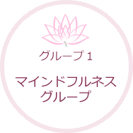

当院のショートケアについて

ハコミ研究所の公認トレーナーである心理療法士がサポートします。
ショートケアではグループが安全と安心を感じられる場であることを基本としています。安全なグループでは、参加者の相互作用が今まで気づかなかった自分の内面とつながる大きな力となります。
また外の世界で人間関係を改善する練習の場ともなります。ショートケアは治療を促進する場として活用できます。
プログラム内容

不安や怒りのコントロールが困難な人を対象としたグループです。今、この瞬間に起きていることを観察する意識状態をマインドフルネスといいます。禅寺の瞑想と近い意識状態です。多くの人が容易にできます。
うつ病や不安障害など、さまざまな病気の治療がある程度進んできた方を対象とします。
内容は本来の自分自身の力に気付き、それを取り戻す方法や、自分を元気にする自分へのはたらきかけの方法を学んでいきます。
どんな症状の人にも共通に必要な安全と安心について練習する場です。「ラビングプレゼンス」とは“愛を感じつつ共にいる”ということです。
自分自身からまた周りの人々や存在からどんないい感じを受け取っているかに気づく練習をします。
費用
保険により異なるので窓口でお尋ねください。